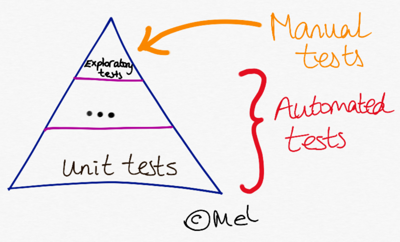

Good Software Engineering

Continuous Integration
The practice of integrating changes from different developers in the team...several times a day.
Is the code in a shared source control repository like git?
Is a central server (e.g. Travis CI) checking that it still builds?
Can failure be pointed back to a specific change?
Testing at every commit for quick feedback.
My CI + deployment pipeline for these slides!
Link to stackoverflow reference for below code
language: python # Set the build language to Python
python: 3.6 # Set the version of Python to use
branches:
only:
- gh-pages
- /.*/ # Watch all branches pushed to github
# Install markdown checker
before_install:
- sudo add-apt-repository -y ppa:mike42/mdcheckr
- sudo apt-get update
- sudo apt-get -y install mdcheckr
install:
- pip install mkdocs # Install mkdocs
- gem install mdl # Install markdown linter
script:
- mdl docs/ ### Run markdown linter against docs/ folder
- mdcheckr docs/*.md #### Check for broken images, link and code blocks
before_deploy:
- mkdocs build --verbose --clean --strict ### Magic to create HTML from my markdown
deploy: # Push generated web files to GitHub
provider: pages
skip_cleanup: true
github_token: $github_token
local_dir: site
on:
branch: master # only publish slides from master
Automated Tests
Is the application covered by a comprehensive suite of tests that run automatically?

Advantage of automated tests
Make code changes with confidence that tests will quickly spot if I break the existing behaviour.
I've been running unit tests locally and during a CI build for my Python.
(Not typical testing) I have a CI build at travis-ci.com for these very slides that:
- checks that my markdown is valid
- checks there are no broken images
- check there are no un-closed code blocks
Test Driven Development
Were tests written before any code?
Red ---> Green ---> Refactor
1. Failing test / red
A snapshot in time failing at test_no_name_given.
class TwoFerTest(unittest.TestCase):
def test_a_name_given(self):
self.assertEqual(two_fer("Alice"), "One for Alice, one for me.")
def test_another_name_given(self):
self.assertEqual(two_fer("Bob"), "One for Bob, one for me.")
def test_no_name_given(self):
self.assertEqual(two_fer(), 'One for you, one for me.')
2. Passing / green
Added an else condition to satisfy new test.
def two_fer(name=""):
if name == "Alice":
return ("One for Alice, one for me.")
elif name == "Bob":
return ("One for Bob, one for me.")
else name == "":
return('One for you, one for me.')
3. Refactored
Now that test passed (and the Rule of Three applied), I refactored.
def two_fer(name="you"):
return (f"One for {name}, one for me.")
Advantages of TDD
- If tests are written before code then it follows that we should have less bugs going unnoticed.
- Most productive programming I've done was exercism.io. As they supply all the tests so never any ambiguity about requirements of code.
- Acts as code documentation.
- And if you like numbers, an easy metric for code quality from coverage %.
- TDD will naturally produce minimal modular code (Single Responsiblity Principle and You Aren't Gonna To Need It)
Thank you
Things I didn't have time for
- SOLID object-orientated design principles
- Single-responsiblity principle
- Open-closed principle
- Liskov substitution principle
- Interface segregation principle
- Dependency Inversion Principle
- Loosely coupled.
- High cohesion.
- Optimising code for performance and security.
- Algorithm complexity.
- Easily readable code, following naming conventions etc.
- Design patterns e.g. singleton and repository.
- Agile development, Kanban boards, SCRUM etc.
- Paired programming.